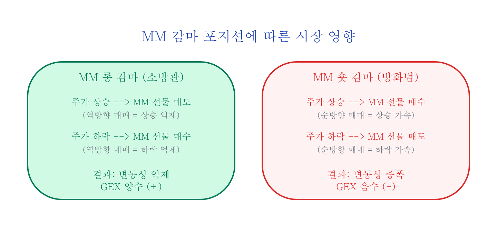
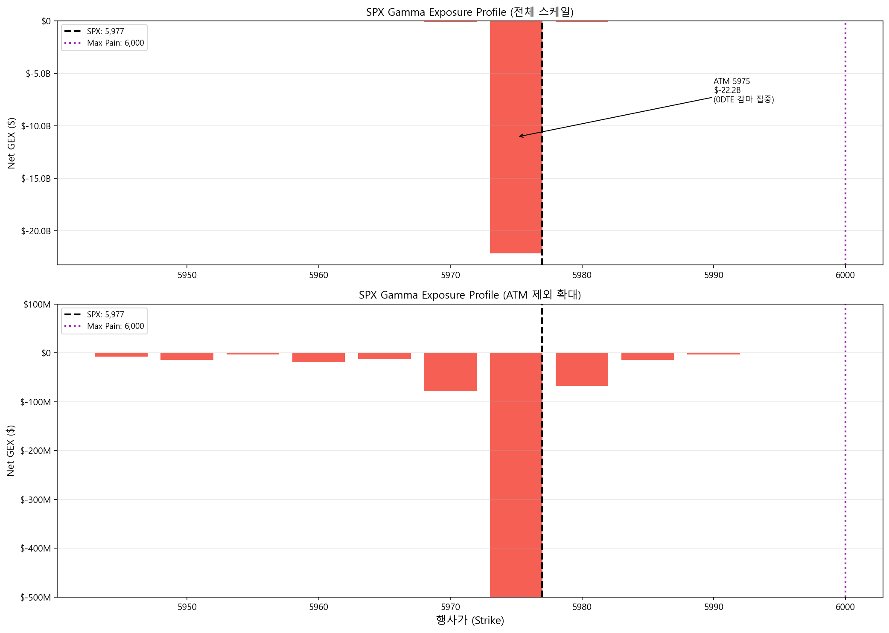
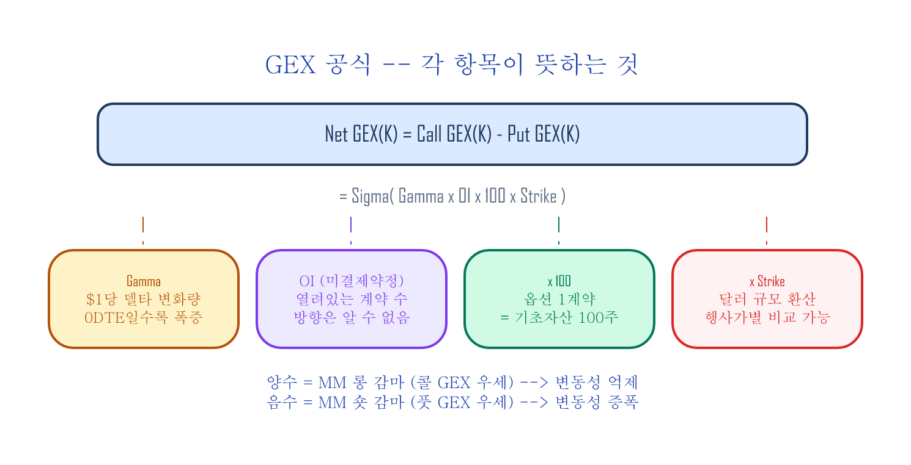
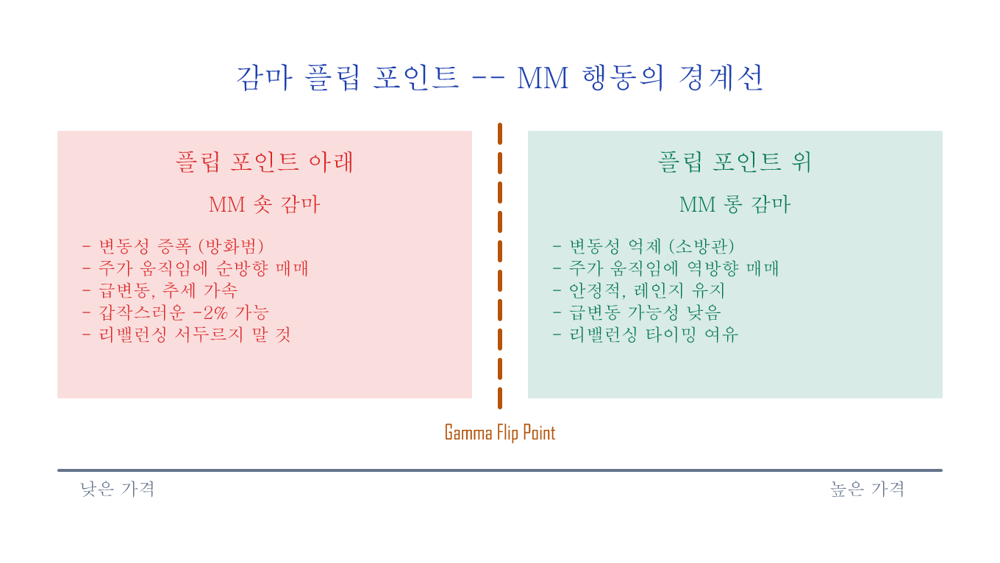

GEX 직접 계산하기 — Google Sheets + Python¶
구글 시트 복사하기: GammaExposureAndMaxPain
이 글에서는 Cboe의 무료 옵션 체인 데이터로 GEX 프로파일, 감마 플립 포인트, Max Pain을 자동 계산하는 구글 시트 도구를 만듭니다. 단계별로 따라 만들면서 각 계산의 의미를 이해하고, 완성된 시트는 매일 데이터만 갱신하면 바로 쓸 수 있습니다.
필요한 것:
- Google 계정 (시트 복사용)
- (선택) Python 3 + pandas, matplotlib
30초 미리보기: 완성된 도구¶
시트를 복사하고 데이터를 넣으면 이런 결과를 볼 수 있습니다 (아래 용어는 이 글에서 모두 설명합니다 — 지금은 "이런 결과를 볼 수 있구나" 정도만 확인하세요):
| 지표 | 예시 값 | 의미 |
|---|---|---|
| Total GEX | -$22.4B | MM이 숏 감마 — 변동성 증폭 모드 |
| Max Pain | 6,000 | 만기일에 주가가 끌려가는 자석 가격 |
| MM 헷지 규모 | 1% 당 $22.4B | 지수 1% 변동 시 MM이 사고팔아야 하는 금액 |
| Put/Call Ratio | 1.17 | 풋 거래량이 콜보다 많음 |
| Top GEX 행사가 | 5,975 (-$22.2B) | 감마가 가장 집중된 가격대 |
지금부터 이 결과가 어떻게 나오는지 단계별로 따라갑니다.
핵심 개념: GEX가 뭔지 3분 요약¶
마켓메이커(MM: Market Maker)와 감마¶
옵션 시장에서 MM은 매수자와 매도자 사이에서 항상 거래 상대방이 되어주는 중개 역할입니다. 주가가 오를지 내릴지에 베팅하지 않고(방향성 배팅 없음), 대신 기초자산(SPX 선물 등)으로 방향성 위험을 상쇄(델타(Delta — 주가 $1 변동 시 옵션 가격 변동폭)를 헷지)합니다.
감마(Gamma)는 주가가 $1 움직일 때 델타가 얼마나 변하는지 — 즉 옵션 민감도의 가속도입니다. MM이 감마를 보유하면 주가 변동마다 헷지 물량이 바뀌어 추가 매매가 발생합니다. 주가가 올랐는데 MM이 선물을 더 사야 한다면(같은 방향) 상승이 가속되고, 반대로 팔아야 한다면 상승에 브레이크가 걸립니다:
- MM 롱 감마: 주가 상승 → 선물 매도(역방향) → 변동성 억제 (소방관)
- MM 숏 감마: 주가 상승 → 선물 매수(순방향) → 변동성 증폭 (방화범)
GEX 공식의 핵심 가정¶
GEX 계산은 두 가지를 가정합니다:
- 콜옵션 미결제약정(OI: Open Interest — 아직 청산되지 않은 계약 수) = 투자자가 매도(SPX/NDX에서는 기관이 보유 주식에 대해 콜옵션을 파는 전략(커버드콜)이 지배적), MM이 매수 → MM 롱 감마 (+)
- 풋옵션 OI = 투자자가 매수(보험), MM이 매도 → MM 숏 감마 (-)
따라서: Net GEX = Call GEX(+) - Put GEX(-). 콜 GEX는 MM에게 안정 효과(+), 풋 GEX는 변동 효과(-)이므로, 둘을 빼서 순효과를 구합니다.
양수면 MM이 소방관, 음수면 방화범.

SPX/NDX 전용
이 가정은 대형 지수 옵션에서만 유효합니다. 개별 종목(TSLA, NVDA 등)에서는 리테일이 콜을 매수하므로 가정 1이 뒤집힙니다. 이 도구는 SPX, NDX, RUT에만 사용하세요.
1단계: 구글 시트 복사¶
- 이 링크를 클릭 → "사본 만들기"
- 복사된 시트에 7개 탭이 있습니다:
| 탭 | 역할 | 당신이 할 일 |
|---|---|---|
| How to import | CBOE 다운로드 가이드 (스크린샷 포함) | 읽기 전용 |
| OptionChain Import | CBOE CSV 데이터 붙여넣는 곳 | 여기에 데이터 import |
| GammaExposure Calc | GEX 자동 계산 | 결과 확인 |
| GammaExposure Graph | 설정 + 요약 대시보드 + Gamma Flip | 결과 확인 |
| MaxPain Calc | Max Pain 자동 계산 | 결과 확인 |
| Gamma Profile Summary | 최종 요약 (Top strikes, OI 분포) | 여기서 결과 읽기 |
| 0DTE Strategy Patterns | 장중 0DTE(당일 만기) 감마 패턴 | 다음 글 참조 |
2단계: CBOE에서 옵션 체인 다운로드¶
- CBOE SPX 옵션 체인 페이지 접속
- Options Range를
Near The Money→All로 변경 - Expiration을
All로 변경 (모든 만기 포함) - View Chain 클릭 → 옵션 체인 생성 대기 (수 초~수십 초)
- 페이지 맨 아래 Download CSV 클릭 → 로컬에 저장
언제 받는 게 좋을까
장 마감 후 (미국 동부 16:00 이후)에 받으면 당일 종가 기준 데이터를 얻습니다. CBOE delayed quotes는 15분 지연 무료 데이터이므로, 장중에는 실시간이 아닙니다.
3단계: 구글 시트에 데이터 넣기¶
- 구글 시트에서
OptionChain Import탭 클릭 - File → Import 메뉴
- Upload → Browse → 방금 받은 CSV 파일 선택
- Import location:
Replace current sheet선택 - Import data 클릭
완료되면 OptionChain Import 탭에 이런 데이터가 채워집니다:
Expiration Date | Calls | Last | ... | Gamma | OI | Strike | Puts | Last | ... | Gamma | OI
Fri Jun 13 2025 | SPXW250613C.. | 1.18 | ... | 0.128 | 769 | 5975 | SPXW250613P.. | 0.48 | ... | 0.128 | 4720
Fri Jun 20 2025 | SPXW250620C.. | 45.2 | ... | 0.008 | 1203 | 5975 | SPXW250620P.. | 38.5 | ... | 0.008 | 2841
...
같은 행사가(5,975)에 만기가 다른 행이 수십 개 있는 것이 정상입니다.
4단계: 결과 확인 — GEX 자동 계산¶
데이터를 넣으면 나머지 탭이 자동으로 계산됩니다. Gamma Profile Summary 탭으로 이동하세요.
대시보드에서 읽을 수 있는 것¶
총 감마 상태:
Call GEX 총합: $4,477,749,074 (MM 롱 감마 기여)
Put GEX 총합: $26,857,654,715 (MM 숏 감마 기여)
Total GEX: -$22,379,905,641 ← 전체 숏 감마
→ Total GEX가 음수 = MM이 전체적으로 숏 감마 = 방화범 모드
헷지 규모 해석:
"Market makers need to SELL $22.4Bn worth of index for each 1% move DOWN,
and BUY $22.4Bn for each 1% move UP."
→ 지수가 1% 움직이면 MM이 $22.4B 규모의 매매를 해야 합니다. 이 매매가 움직임을 더 증폭시킵니다.
Max Pain / Gamma Flip:
Max Pain = 6,000
Gamma Flip = 없음 (전 구간 숏 감마)
→ Max Pain: 만기일에 옵션 매수자 전체가 가장 적게 버는 가격 — 쉽게 말해, 옵션을 산 사람들이 가장 울상인 가격입니다. 현재가(5,976.97)와 가까우면 만기일에 주가가 특정 행사가에 붙어 움직이지 않는 현상("핀닝(pinning)") 가능성. → Gamma Flip: 이 데이터에서는 ATM 근처의 Net GEX가 전부 음수이므로 플립 포인트가 없습니다. 풋 OI가 압도적인 날에는 이렇게 나옵니다. 콜 OI가 우세한 구간이 있는 날에는 구체적인 행사가가 표시됩니다.
Top 5 행사가 (Net GEX 기준):
| 행사가 | Net GEX | 해석 |
|---|---|---|
| 5,975 | -$22.2B | ATM — 0DTE 감마 집중 |
| 5,970 | -$77.4M | 숏 감마 가속 |
| 5,980 | -$67.7M | 숏 감마 가속 |
| 5,960 | -$19.3M | 하방 압력 |
| 5,950 | -$14.5M | 하방 지지선 후보 |
OI 분포:
| 콜 OI 상위 | 풋 OI 상위 |
|---|---|
| 6,100 (12,787) | 6,000 (8,247) |
| 6,150 (11,673) | 5,975 (4,720) |
| 6,140 (9,143) | 5,960 (2,546) |
→ 콜 OI는 현재가 위에 집중, 풋 OI는 현재가 부근에 집중. 전형적인 숏 감마 구조.
GEX 프로파일 차트: 위 데이터를 행사가별로 시각화하면 다음 프로파일이 됩니다.

상단: ATM(5,975)에 0DTE 감마가 집중되어 -$22.2B 스파이크. 하단: ATM 제외 확대 — 주변 행사가의 GEX 분포. 빨간색 = 숏 감마(변동성 증폭), 파란색 = 롱 감마(변동성 억제).
뜯어보기: 수식이 실제로 무엇을 계산하는지¶
결과를 확인했으니, 이제 시트가 내부적으로 무엇을 하는지 이해합니다.
GEX 계산 (GammaExposure Calc 탭)¶
각 행사가 K에 대해, 모든 만기의 데이터를 합산합니다:
Call GEX(K) = Σ (Gamma_i x Call_OI_i x 100 x K)
Put GEX(K) = Σ (Gamma_i x Put_OI_i x 100 x K)
Net GEX(K) = Call GEX(K) - Put GEX(K)
| 항목 | 의미 |
|---|---|
Gamma_i |
만기 i에서의 감마 (0DTE면 극대, 30DTE면 작음) |
OI_i |
만기 i에서의 미결제약정 |
x 100 |
옵션 1계약 = 100주 |
x K |
감마($1당 델타 변화)를 해당 행사가 수준의 달러 규모로 환산 |

GEX 공식 변형
SpotGamma 등에서는 Gamma x OI x 100 x S^2 x 0.01 (S = 현재가)을 사용하여 "1% 변동당 헷지 금액"을 직접 산출합니다. 이 시트는 x K(행사가)를 사용하는 변형으로, 행사가별 달러 감마를 비교하는 데 적합합니다. 절대 금액은 다르지만 프로파일의 형태와 플립 포인트는 동일합니다.
구글 시트 수식 (GammaExposure Calc 탭, 행사가별 중복 제거 섹션):
Call GEX = SUMPRODUCT(
(OptionChain!$K:$K = L2) * ← 행사가 일치
OptionChain!$J:$J * ← Call Gamma
OptionChain!$K2:$K2 * ← Call OI
100 * L2 ← x 100 x 행사가
)
왜 5,975에서 GEX가 폭발하는가¶
행사가 5,975의 데이터:
| 만기 | Gamma | Call OI | Put OI |
|---|---|---|---|
| 0DTE (Jun 13) | 0.1281 | 769 | 4,720 |
| 1주 (Jun 20) | 0.0080 | 1,203 | 2,841 |
| 1개월 (Jul 18) | 0.0025 | 587 | 1,156 |
만기가 가까울수록 감마가 급증합니다 — 시간이 얼마 남지 않은 옵션은 주가 변동에 극도로 민감해지기 때문입니다. 0DTE의 감마(0.1281)가 1주 만기(0.0080)보다 16배 큽니다. OI에 곱하면 0DTE 한 만기가 GEX의 대부분을 결정합니다.
감마 플립 포인트¶
높은 행사가부터 아래로 내려가면서 Net GEX 누적합이 양수에서 음수로 전환되는 가격
이 가격이 MM의 행동이 뒤바뀌는 경계선입니다:
| 현재가 위치 | MM 상태 | 시장 특성 |
|---|---|---|
| 플립 포인트 위 | 롱 감마 (소방관) | 변동성 억제, 안정적 |
| 플립 포인트 아래 | 숏 감마 (방화범) | 변동성 증폭, 급변 가능 |

시트에서는 GammaExposure Calc 탭의 AH열이 이 누적합을 자동 계산합니다:
AH2 = MAP(L2:L258, LAMBDA(k, SUMPRODUCT((L$2:L$258>=k)*IF(ISNUMBER(V$2:V$258),V$2:V$258,0))))
각 행사가에 대해 "이 가격 이상의 모든 Net GEX 합계"를 구합니다. 이 값이 양수에서 음수로 바뀌는 지점이 플립 포인트이며, GammaExposure Graph 탭의 Gamma Flip 셀에 자동 표시됩니다.
플립 포인트가 없는 경우
Total GEX가 전 구간에서 음수이면 플립 포인트가 존재하지 않습니다. MM이 모든 가격대에서 숏 감마입니다.
단순화된 근사
이 방법은 현재 옵션 체인의 감마를 고정하고 누적합을 구하는 근사입니다. 정밀한 방법은 각 가상 현재가에서 블랙-숄즈 모형(BSM: Black-Scholes-Merton)으로 감마를 재계산하여 총 GEX를 구하지만, 계산량이 크고 결과 차이는 대부분 소폭입니다.
Max Pain (MaxPain Calc 탭)¶
옵션 매수자 전체의 내재가치 합계가 최소가 되는 만기 정산 가격 (= MM 이익이 최대인 가격)
각 가상 정산가 S에 대해:
콜 내재가치(S) = Σ_K max(S - K, 0) x Call_OI(K) x 100
풋 내재가치(S) = Σ_K max(K - S, 0) x Put_OI(K) x 100
총 내재가치(S) = 콜 내재가치 + 풋 내재가치
Max Pain = 총 내재가치가 최소인 S (옵션 매수자가 가장 적게 버는 가격 = MM이 가장 많이 버는 가격)
시트에서 dollar value sum 컬럼이 이 값이고, 가장 작은 행의 행사가가 Max Pain입니다.
매일 사용하는 법¶
| 시점 | 할 일 | 소요 시간 |
|---|---|---|
| 장 마감 후 | CBOE에서 CSV 다운로드 | 1분 |
구글 시트 OptionChain Import 탭에 import |
1분 | |
Gamma Profile Summary 탭에서 결과 확인 |
— | |
| 다음 날 장 시작 전 | Total GEX 부호 + 플립 포인트 + Max Pain 확인 | 1분 |
3분이면 당일 GEX 상태를 파악할 수 있습니다.
확인할 체크리스트:
- [ ] Total GEX 부호: 양수(안정) vs 음수(불안정)
- [ ] 플립 포인트: 현재가보다 위인지 아래인지
- [ ] Max Pain: 현재가와 얼마나 가까운지
- [ ] Top 5 행사가: 지지/저항으로 작용할 가격대
Python 버전: 자동화¶
매일 수동으로 하기 번거로우면 Python으로 자동화할 수 있습니다. CBOE CSV를 넣으면 GEX, 플립 포인트, Max Pain을 한 번에 계산합니다.
파이썬 전체 코드 (GEX + Max Pain + 차트)
import pandas as pd
import numpy as np
import matplotlib.pyplot as plt
import matplotlib.ticker as mticker
def parse_cboe_csv(filepath):
"""CBOE SPX 옵션 체인 CSV를 파싱합니다."""
df = pd.read_csv(filepath, skiprows=3)
df.columns = [
'expiry', 'call_symbol', 'call_last', 'call_net', 'call_bid', 'call_ask',
'call_volume', 'call_iv', 'call_delta', 'call_gamma', 'call_oi',
'strike',
'put_symbol', 'put_last', 'put_net', 'put_bid', 'put_ask',
'put_volume', 'put_iv', 'put_delta', 'put_gamma', 'put_oi'
]
for col in ['strike', 'call_gamma', 'put_gamma', 'call_oi', 'put_oi',
'call_volume', 'put_volume']:
df[col] = pd.to_numeric(df[col], errors='coerce')
return df.dropna(subset=['strike'])
def calc_gex(df):
"""행사가별 GEX 계산 (모든 만기 합산)."""
df['call_gex'] = df['call_gamma'] * df['call_oi'] * 100 * df['strike']
df['put_gex'] = df['put_gamma'] * df['put_oi'] * 100 * df['strike']
gex = df.groupby('strike').agg(
call_gex=('call_gex', 'sum'),
put_gex=('put_gex', 'sum'),
call_oi=('call_oi', 'sum'),
put_oi=('put_oi', 'sum'),
call_volume=('call_volume', 'sum'),
put_volume=('put_volume', 'sum'),
).reset_index()
gex['net_gex'] = gex['call_gex'] - gex['put_gex']
gex['total_gex'] = gex['call_gex'] + gex['put_gex']
return gex
def find_gamma_flip(gex):
"""높은 행사가부터 누적하여 Net GEX가 +에서 -로 전환되는 행사가."""
g = gex.sort_values('strike', ascending=False).copy()
g['cum'] = g['net_gex'].cumsum()
sign_change = (g['cum'].shift(1) > 0) & (g['cum'] <= 0)
if sign_change.any():
return g.loc[sign_change.idxmax(), 'strike']
return None
def calc_max_pain(gex):
"""총 옵션 내재가치가 최소인 행사가."""
strikes = gex['strike'].values
call_oi = gex['call_oi'].values
put_oi = gex['put_oi'].values
pain = []
for s in strikes:
cp = np.sum(np.maximum(s - strikes, 0) * call_oi) * 100
pp = np.sum(np.maximum(strikes - s, 0) * put_oi) * 100
pain.append(cp + pp)
gex['pain'] = pain
return gex.loc[gex['pain'].idxmin(), 'strike']
def plot_gex(gex, spot, flip=None, max_pain=None):
"""GEX 프로파일 차트."""
margin = spot * 0.05
g = gex[(gex['strike'] >= spot - margin) & (gex['strike'] <= spot + margin)]
fig, ax = plt.subplots(figsize=(14, 7))
colors = ['#2196F3' if v >= 0 else '#F44336' for v in g['net_gex']]
ax.bar(g['strike'], g['net_gex'], width=3, color=colors, alpha=0.8)
ax.axvline(spot, color='black', lw=2, ls='--', label=f'SPX: {spot:,.0f}')
if flip:
ax.axvline(flip, color='#FF9800', lw=2, label=f'Gamma Flip: {flip:,.0f}')
if max_pain:
ax.axvline(max_pain, color='#9C27B0', lw=2, ls=':', label=f'Max Pain: {max_pain:,.0f}')
ax.set_xlabel('Strike')
ax.set_ylabel('Net GEX ($)')
ax.set_title('SPX Gamma Exposure Profile')
ax.legend(fontsize=11)
ax.yaxis.set_major_formatter(mticker.FuncFormatter(
lambda x, _: f'${x/1e9:.1f}B' if abs(x) >= 1e9 else f'${x/1e6:.0f}M'))
ax.axhline(0, color='gray', lw=0.5)
ax.grid(axis='y', alpha=0.3)
plt.tight_layout()
plt.savefig('gex_profile.png', dpi=150, bbox_inches='tight')
plt.show()
# === 실행 ===
df = parse_cboe_csv('spx_options.csv') # CBOE CSV 경로
gex = calc_gex(df)
spot = 5976.97
flip = find_gamma_flip(gex)
mp = calc_max_pain(gex)
total = gex['net_gex'].sum()
print(f"Total GEX: ${total:,.0f}")
print(f"Gamma Flip: {flip}")
print(f"Max Pain: {mp}")
print(f"Put/Call Vol: {gex['put_volume'].sum() / gex['call_volume'].sum():.2f}")
plot_gex(gex, spot, flip, mp)
GEX 계산의 한계¶
이 도구를 사용할 때 반드시 알아야 할 점:
-
OI는 어제 장 마감 기준 — 장중 대량 거래가 반영되지 않습니다. → 다음 글: 0DTE 감마 패턴에서 장중 보정 방법
-
CBOE Gamma는 블랙-숄즈 모형(BSM) 기반 — 이론적 감마입니다. 실제 MM이 사용하는 감마와 다를 수 있습니다.
-
OI의 방향을 모릅니다 — 누가 매수이고 매도인지 공개 데이터로는 알 수 없습니다. "콜 = MM 매수, 풋 = MM 매도" 가정에 의존합니다.
-
0DTE가 지배적 — ATM 0DTE 감마가 극대이므로, GEX가 당일 만기 하나에 좌우됩니다. 장중에 0DTE OI가 변하면 GEX도 크게 변합니다.
-
절대적 매매 신호가 아닙니다 — GEX는 "MM의 예상 포지션"을 추정하는 방향성 지표입니다. 단독으로 매매 결정에 사용하지 마세요.
마무리¶
이 도구로 할 수 있는 것:
- 매일 3분으로 GEX 상태 파악 — Total GEX 부호, 플립 포인트, Max Pain
- 지지/저항 후보 식별 — GEX가 큰 행사가 = MM 헷지가 집중되는 가격대
- MM 행동 방향 추정 — 숏 감마(변동성 증폭) vs 롱 감마(변동성 억제)
- 장중 급변동의 맥락 이해 — "왜 갑자기?"에 대한 구조적 답
GEX는 단기 매매 신호가 아닙니다. 장기 투자자에게 GEX의 가치는 시장의 급변동을 구조적으로 이해하고, 공포에 흔들리지 않는 것입니다. 지수가 갑자기 -2% 빠졌을 때 "0DTE 감마 헷지 물량이구나"라고 판단할 수 있으면, 패닉에 팔지 않고 리밸런싱 원칙을 지킬 수 있습니다.
다음 글¶
아침에 계산한 GEX는 출발점입니다. 장중에 0DTE 옵션이 대량 거래되면 GEX가 어떻게 변하는가? BTO/STO 패턴이 MM의 감마 포지션을 어떻게 밀어내는지, 아침 GEX에 장중 보정을 적용하는 방법을 다룹니다.
→ 0DTE 감마 패턴 — 장중 GEX는 어떻게 변하는가
참고¶
Cboe, SPX, VIX는 Cboe Exchange, Inc.의 등록 상표입니다. 이 글은 Cboe와 제휴 또는 보증 관계가 없습니다.
이전 글: Almanac Trader — Seasonality 분석 | 다음 글: 0DTE 감마 패턴 — 장중 GEX는 어떻게 변하는가